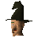

Hetty

| Config name | hetty |
| NPC id | 307 |
| Combat level | hidden |
| Options | Talk-to |
| Wander range | 5 tiles from spawn |
| Movement | indoors |
| Area folder | area_rimmington |
| Defined in | scripts/areas/area_rimmington/configs/rimmington.npc |
Hetty
An old motherly witch with a curious smile and a hooked nose.
Show all 1 spawn on the world map → Open in knowledge graph →
Locations
| Area | Coordinates | Level | Count | Map |
|---|---|---|---|---|
| Rimmington | 2968, 3206 | 0 | 1 | view |
Dialogue
HettyWhat could you want with an old woman like me?
PlayerI am in search of a quest.
HettyHmmm... Maybe I can think of something for you.
HettyWould you like to become more proficient in the dark arts?
PlayerYes help me become one with my darker side.
HettyOk I'm going to make a potion to help bring out your darker self.
HettyYou will need certain ingredients.
PlayerWhat do I need?
HettyYou need an eye of newt, a rat's tail, an onion... Oh and a piece of burnt meat.
PlayerGreat, I'll go and get them.
PlayerNo I have my principles and honour.
HettySuit yourself, but you're missing out.
PlayerWhat, you mean improve my magic?
The witch sighs.
HettyYes, improve your magic...
HettyDo you have no sense of drama?
PlayerYes I'd like to improve my magic.
The witch sighs.
PlayerNo, I'm not interested.
HettyMany aren't to start off with.
The witch smiles mysteriously.
HettyBut I think you'll be drawn back to this place.
PlayerShow me the mysteries of the dark arts...
The witch smiles mysteriously.
PlayerI've heard that you are a witch.
HettyYes it does seem to be getting fairly common knowledge.
HettyI fear I may get a visit from the witch hunters of Falador before long.
HettySo have you found the things for the potion?
PlayerYes I have everything!
HettyExcellent, can I have them then?
You pass the ingredients to Hetty and she puts them all into her cauldron. Hetty closes her eyes and begins to chant. The cauldron bubbles mysteriously.
PlayerWell, is it ready?
HettyOk, now drink from the cauldron.
PlayerNo, not yet.
HettyWell I can't make the potion without them! Remember... You need an eye of newt, a rat's tail, an onion, and a piece of burnt meat. Off you go dear!
HettyWell are you going to drink the potion or not?
HettyHow's your magic coming along?
PlayerI'm practicing and slowly getting better.
HettyGood, good.
Quests
Referenced in scripts
scripts/_test/scripts/cheats/cheat_quest.rs2scripts/areas/area_rimmington/scripts/hetty.rs2scripts/drop tables/scripts/rat.rs2scripts/general/scripts/quests.rs2scripts/quests/quest_hetty/scripts/hetty_journal.rs2scripts/quests/quest_hetty/scripts/quest_hetty.rs2